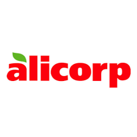
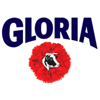
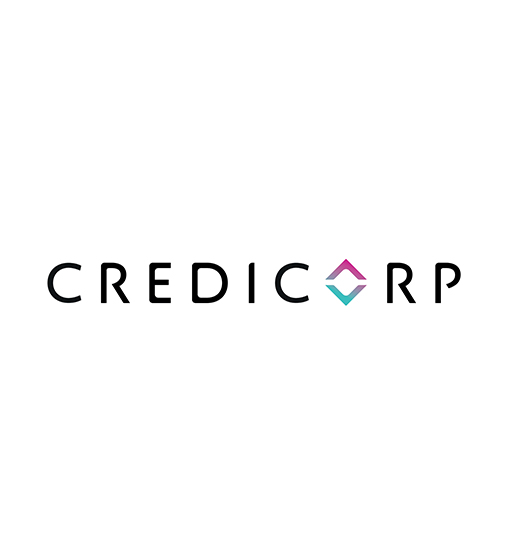
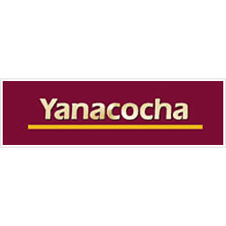
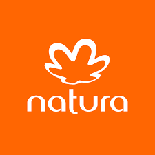
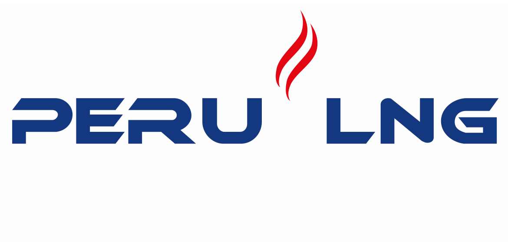
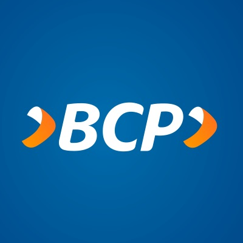
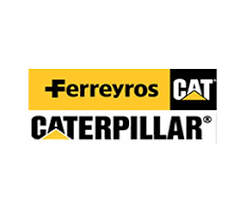
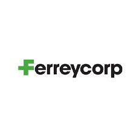
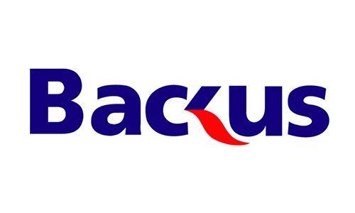

Alicorp ha implementado programas para mejorar la seguridad alimentaria y la nutrición en comunidades vulnerables. También han promovido prácticas sostenibles en su cadena de suministro, trabajando en reducir el impacto ambiental de sus operaciones.

Grupo Gloria ha trabajado en programas de desarrollo social y económico en comunidades donde operan. Han impulsado con programas de capacitación a los agricultores y ganaderos, promovido el acceso a educación y salud, y han apoyado iniciativas para el desarrollo de emprendedores locales.

Credicorp ha implementado programas de inclusión financiera, brindando acceso a servicios financieros a comunidades desatendidas. También han promovido la educación financiera y han respaldado proyectos de desarrollo comunitario en áreas rurales y de bajos ingresos.

Yanacocha, una de las principales compañías mineras en Perú, implementó programas de gestión ambiental y conservación de la biodiversidad en áreas cercanas a sus operaciones. Han trabajado en protección de ecosistemas y restauración de áreas degradadas.

Natura es una empresa de cosméticos y productos de cuidado personal, ha trabajado en la promoción de la sostenibilidad y la protección del medio ambiente. Implementó prácticas de abastecimiento sostenible, reducción de plásticos y respaldado de proyectos de reforestación.

Peru LNG se dedica a la producción y exportación de gas natural en Perú. Han implementado programas de gestión ambiental y social en sus operaciones, con el objetivo de minimizar los impactos ambientales y promover prácticas sostenibles en el sector energético.

El BCP ha implementado políticas de bienestar y desarrollo para sus empleados, incluyendo programas de capacitación y desarrollo profesional. También han promovido la diversidad y la inclusión en el lugar de trabajo, fomentando un ambiente laboral equitativo y respetuoso.

Ferreyros ha llevado a cabo programas de capacitación y desarrollo para sus empleados, enfocados en el desarrollo de habilidades técnicas y competencias laborales. También han implementado políticas de seguridad y salud ocupacional para garantizar un entorno laboral seguro.

Grupo Romero ha demostrado interés en el desarrollo profesional de sus trabajadores. La empresa ha implementado programas de capacitación y desarrollo para mejorar las habilidades y competencias de su personal, promoviendo así su crecimiento y progreso laboral.

Ferreycorp ha promovido el desarrollo económico del país a través de sus actividades en el sector de la maquinaria y equipos pesados. Han brindado soluciones y servicios que impulsan la productividad de diferentes industrias, generando impacto económico y contribuyendo al progreso del país.

Ferreycorp ha promovido el desarrollo económico del país a través de sus actividades en el sector de la maquinaria y equipos pesados. Han brindado soluciones y servicios que impulsan la productividad de diferentes industrias, generando impacto económico y contribuyendo al progreso del país.

Scotiabank Perú ha implementado programas de educación financiera y emprendimiento para brindar herramientas a la comunidad. También han promovido la inclusión financiera a través de la implementación de productos y servicios accesibles para sectores desatendidos.